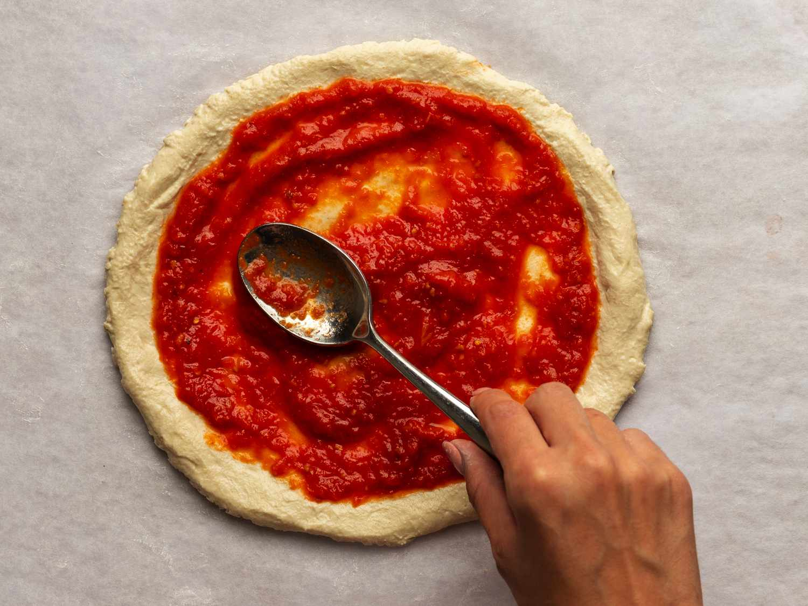

Recipe
This is my Go to Sauce for homemade Pizza
Ingredients
- 20 grams Extra-Virgin Olive Oil
- 1 clove Garlic
- 8 Grams fine Sea Salt
- 0.2 gram Dried Oregano
- 0.4 gram Red Pepper Flakes
- 28 oz Can Whole Tomatoes
Preparation
- Combine Olive Oil, Garlic, Salt,Oregano and Pepper Flakes into blender.
- Add one spoonful of Tomatoes
- Blend quickly with one ot two pulses to combine
- Add the rest of the canned tomatoes and pulse being careful not to over blend over blending with result in watered down sauce